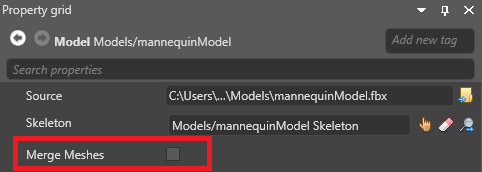
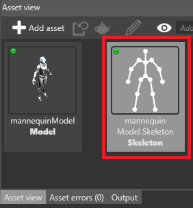

マテリアルスロット
中級 アーティスト プログラマー
モデルは、複数のマテリアルを持つことができます。マテリアルは、モデルのマテリアルスロットに設定します。

例えば、このモデルの 2 番目のマテリアルスロットは、バイザーならびに肩と胸のプレートのストライプ部分のマテリアルを指定する場所です。このスロットのマテリアルを変更することで、モデルのこれらの部分で使用されるマテリアルを変更することができます。

マテリアルスロット自体（の数と位置）は、モデルのソースファイル（.fbx、.obj など）で定義されています。Game Studio でマテリアルスロット自体を編集することはできません。変更できるのは各スロットで使用するマテリアルだけです。
モデルにマテリアルを設定する
モデルが使うマテリアルは、次の 2 ヶ所で変更することが可能です。
モデル自体の Materials プロパティ：

Note
この設定は、このモデルのすべてのインスタンスに影響します。
エンティティのモデルコンポーネントまたはプレハブの Materials プロパティ：

この設定は、設定したインスタンスまたはプレハブだけに適用されます。
メッシュとマテリアルスロット
モデリングソフトから取り込んだモデルにはメッシュが含まれています。このとき、マテリアルスロットを介して、メッシュ間でマテリアルを共有することができます。
メッシュとマテリアルスロットの関連付けは、モデルのソースファイルで定義します。これらの関連付けは Game Studio では変更できませんが、実行時にコードから変更することができます。
メッシュとマテリアルの関連付けを変更する方法：
MyModelComponent.Model.Meshes[submeshIndex].MaterialIndex = materialIndex;
マテリアルのリストにマテリアルを追加または変更する方法：
MyModelComponent.Materials[ExistingOrNewMaterialIndex] = myMaterial;
メッシュをマージする
Stride は、メッシュを持つモデルを描画するとき、各メッシュに対して 1 回ずつ GPU の描画呼び出しを行います。既定では、パフォーマンスを上げるために、ビルド時にマテリアルを共有しているメッシュをマージします。

上の例では、5 つのメッシュと 5 回の描画呼び出しがあります。マージ後は、3 つのメッシュと 3 回の描画呼び出しになります。
Note
Stride は、メッシュをマージする際に、頂点バッファとインデックスバッファをマージします。つまり、実行時にマージ済みメッシュをバラバラに描画することはできず、元のメッシュの位置（変換行列）を変更することもできません。メッシュは、単一のマテリアルと単一の（モデルに対する相対的な）変換行列を持つ単一のメッシュになります。
Note
Stride は、メッシュをマージする際に、マテリアルの描画順序を変更します。透明なマテリアルがあると、これにより異なった結果になることがあります。
Note
モデルから物理コライダーを作成すると、Stride は、モデルの各メッシュに対して別々の凸開包を構築します。メッシュがマージされた場合はマテリアルごとに 1 つのメッシュしか残らないので、凸開包もマージ後のメッシュに対して構築されます。
メッシュのマージを無効化する
場合によっては、メッシュのマージを無効にした方がいいかもしれません。
メッシュをアニメーションする場合
実行時にメッシュのマテリアルを変更する場合
モデル上でメッシュのマージを無効化する方法は、次の通りです。
メッシュのマージを無効にしたいモデルを選択します。
プロパティグリッドで、Merge meshes を無効化します。

特定のメッシュのマージを無効化する
特定のメッシュに対してのみマージを無効化するには、それに対応するノードプロパティを指定します。
無効化したいメッシュを持つモデルを選択します。
プロパティグリッドの Skeleton プロパティで、モデルに関連付けられているスケルトンを確認します。

スケルトンに関する詳細については、アニメーションを参照してください。
アセットビューで、そのスケルトンを選択します。

プロパティグリッドの Nodes プロパティで、マージしたくないメッシュに対応するノードを選択します。

Tip
どのノードがどのメッシュに対応しているかを確認するには、Maya などのモデリングアプリケーションで、モデルのソースファイルを開いてください。
Note
実行時にアニメーションする予定のノードを無効にしないようにしてください。